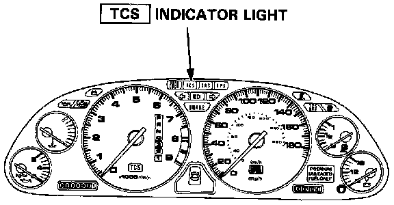
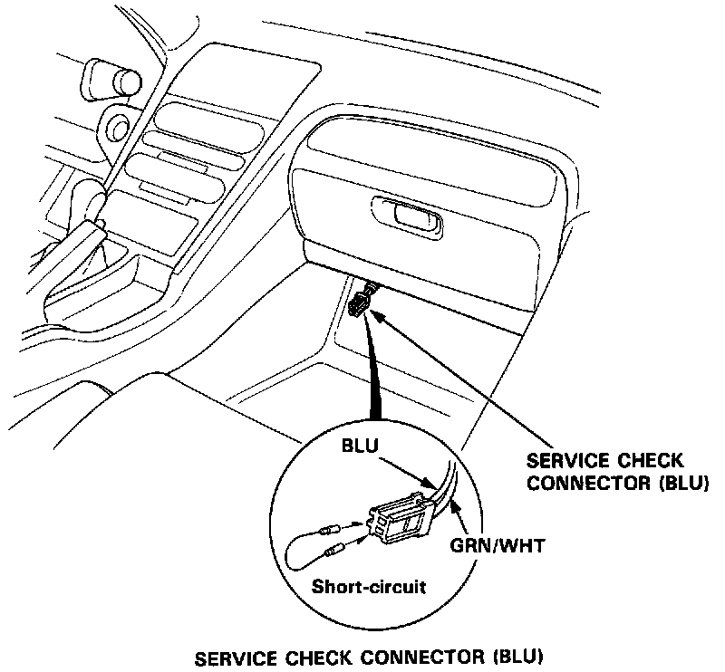
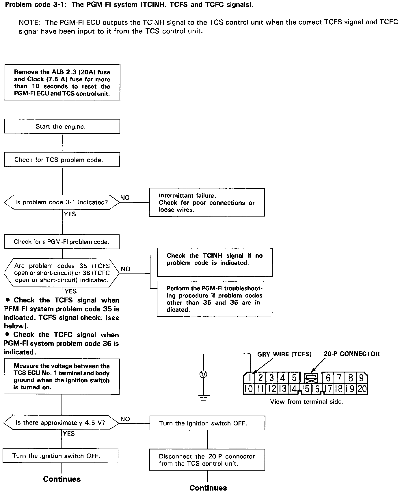
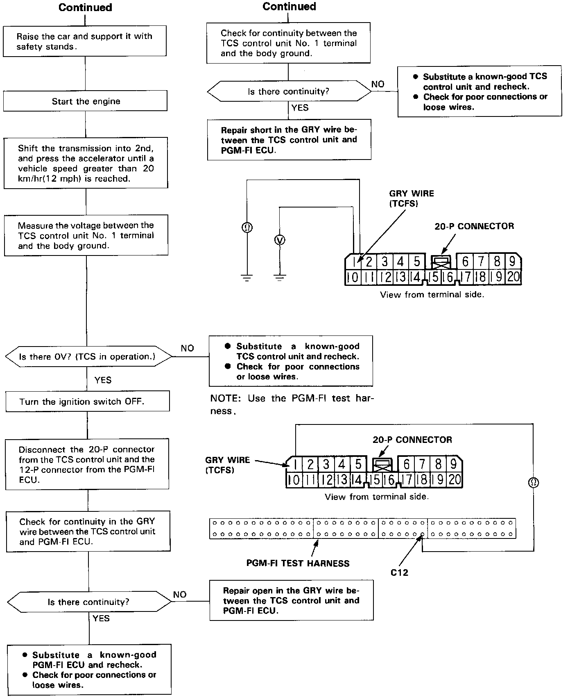
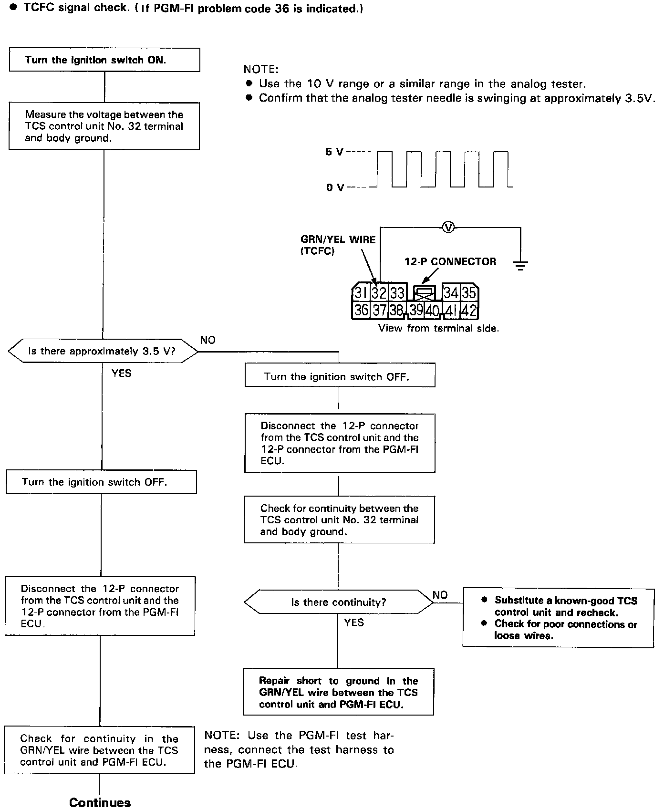
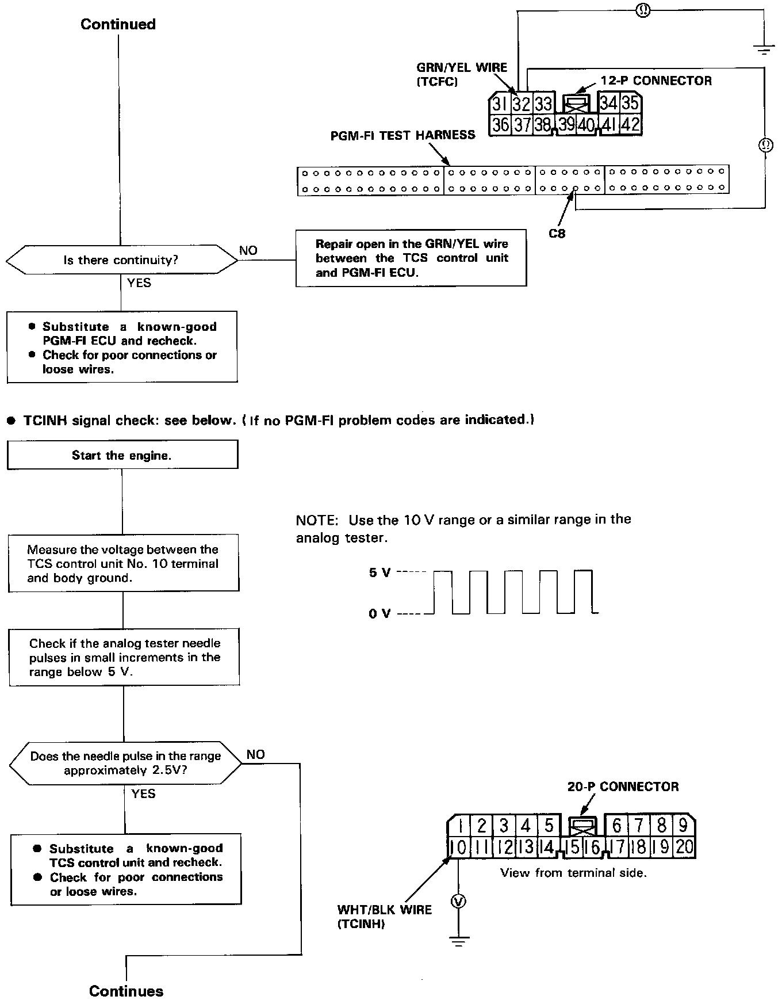
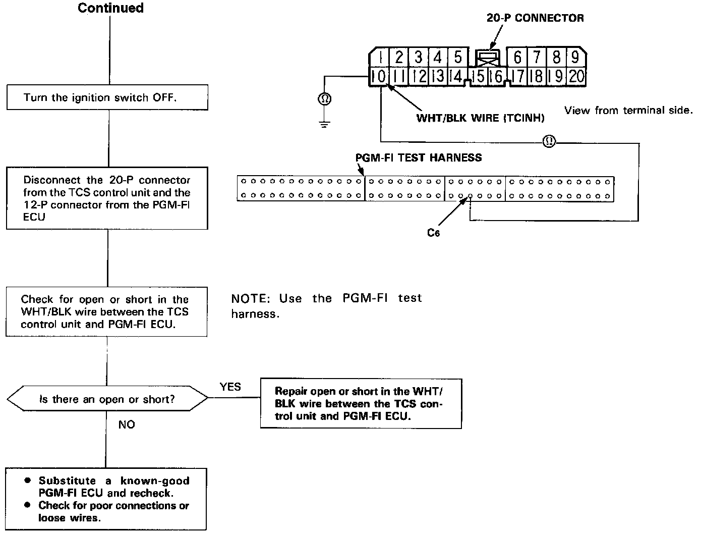

DTC 35

NOTE: The Check Engine light and TCS indicator light may come on simultaneously when the self-diagnosis indicator blinks 3, 5, 6, 13, 15, 16, 17, 35 and 36. Check the PGM-FI system according to the PGM-FI control system troubleshooting, and repair as necessary.
After making repairs for PGM-FI codes other than 35 or 36, check for TCS codes as follows:

TCS Problem Code Indication:
1. Stop the engine.
2. Turn the ignition switch on and confirm that the TCS indicator light comes on.
3. Turn the ignition switch off.
4. Connect the two terminals of the Service Check Connector with a jumper wire.
5. Turn the ignition switch on, but do not start the engine.
6. Record the blinking frequency of the TCS indicator light. The blinking frequency indicates the problem code. Long blinks indicate the main code; short blinks indicate the sub-code.
If TCS indicator light indicates TCS Code 3-1 and Check Engine Light indicates PGM-FI code 35 or 36, perform tests according to flowcharts.
PGM-FI To TCS Signals, TCFC Signal:

TCFS Signal, Continued:

TCFC Signal:

TCFC Signal, TCINH Signal:

TCINH Signal, Continued:
